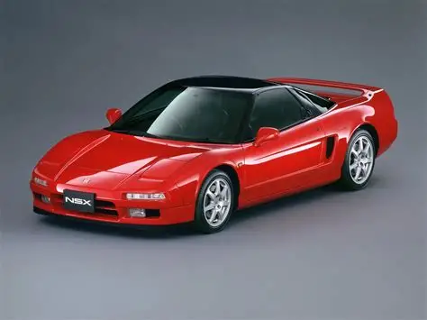

Honda NSX

O Acura NSX dos anos 90, conhecido internamente como código NA1 (e mais tarde NA2 após algumas atualizações), é um dos superdesportivos mais importantes da história automóvel, principalmente porque mudou completamente a perceção do que um carro exótico podia ser. Produzido entre 1990 e 2005, o NSX foi desenvolvido pela Honda em colaboração com a divisão premium Acura, com a ideia de criar um supercarro que fosse ao mesmo tempo rápido, fiável e utilizável no dia a dia, algo praticamente inédito na época. O desenvolvimento do NSX foi até influenciado por pilotos de Fórmula 1, incluindo Ayrton Senna, que ajudou a afinar o chassis durante os testes iniciais, o que contribuiu para o seu comportamento extremamente preciso e equilibrado. O objetivo era competir com marcas como Ferrari, mas com a filosofia de engenharia japonesa baseada em fiabilidade e engenharia de precisão. O coração do NSX dos anos 90 é o motor C30A, um V6 3.0 litros atmosférico DOHC VTEC totalmente em alumínio, sendo um dos primeiros motores de produção em massa a usar construção totalmente em alumínio tanto no motor como no chassis. Este motor debita cerca de 274 cavalos de potência às 7.100 rpm e aproximadamente 285 Nm de binário às 5.500 rpm. Em 1997, surgiu uma atualização com o motor C32B 3.2 litros, que aumentou a potência e melhorou a resposta, mantendo sempre o caráter atmosférico de alta rotação típico da Honda. O desempenho do NSX é muito sólido para um supercarro da sua época, com o 0–100 km/h a ser feito em cerca de 5,7 a 6,0 segundos nas versões iniciais e ligeiramente mais rápido nas versões posteriores com caixa manual de 6 velocidades. A velocidade máxima ronda os 270 km/h, dependendo da versão e do mercado. Mais importante do que a aceleração em linha reta, o NSX destacou-se pela sua estabilidade, equilíbrio e facilidade de condução, sendo considerado um supercarro “amigável” e previsível, ao contrário de muitos rivais mais brutais da época. O chassis é uma das maiores inovações do modelo. Construído em alumínio aeroespacial, o NSX foi o primeiro carro de produção em massa com chassis totalmente em alumínio, o que permitiu reduzir significativamente o peso total para cerca de 1.350 kg. A suspensão independente nas quatro rodas com geometria avançada foi afinada para oferecer um equilíbrio quase perfeito entre conforto e performance. A distribuição de peso aproximada de 42:58 (frente/trás) contribui para uma dinâmica muito neutra e previsível em curva. A direção do NSX é extremamente comunicativa, muitas vezes comparada à de carros de corrida, oferecendo feedback direto e preciso. Os travões foram desenvolvidos para suportar condução intensa, com discos ventilados e um sistema altamente resistente à fadiga, adequado para uso em pista. Em termos de transmissão, o NSX foi inicialmente equipado com uma caixa manual de 5 velocidades, que mais tarde evoluiu para uma de 6 velocidades nas versões 3.2. Existiu também uma versão automática, mas a maioria dos entusiastas prefere a manual pela ligação mais pura à condução. O design exterior do NSX dos anos 90 é um dos seus pontos mais marcantes: linhas limpas, aerodinâmica eficiente e proporções baixas e largas. Foi um dos primeiros supercarros a utilizar faróis retráteis, o que lhe deu um visual muito característico da época. Apesar de parecer simples comparado com outros supercarros italianos, cada detalhe foi pensado para eficiência aerodinâmica e estabilidade a alta velocidade. O interior segue a filosofia da Honda de ergonomia e funcionalidade. Tudo está orientado para o condutor, com visibilidade excecional para um supercarro, algo que Ayrton Senna ajudou a melhorar durante o desenvolvimento. Os materiais são de alta qualidade, mas o foco não é luxo extremo, e sim conforto funcional e controlo. No geral, o NSX dos anos 90 é considerado um dos supercarros mais importantes de sempre porque combinou desempenho de nível Ferrari com fiabilidade japonesa e usabilidade diária. Ainda hoje é visto como um ícone da engenharia da Honda e um dos melhores exemplos de como um supercarro pode ser rápido, equilibrado e utilizável ao mesmo tempo, sem perder a sensação de condução pura e envolvente.
|